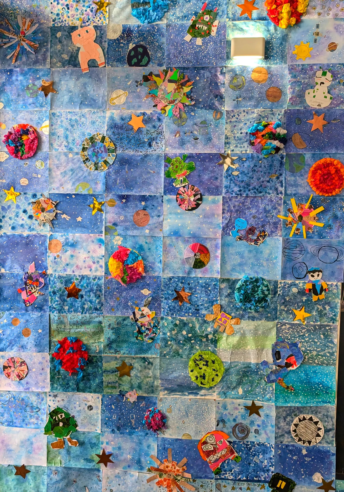

An introduction

I am an educator, artist and Visual Arts Coordinator with over a decade of teaching experience across Foundation to Year 6. My background combines specialist Visual Arts education, professional artistic practice and whole-school leadership, with a passion for creating engaging, inclusive and ambitious learning experiences.
As a Visual Arts teacher, I develop and lead programs that encourage students to explore ideas, experiment with materials, build practical skills and think creatively. Drawing on my experience as both a classroom and specialist teacher, I design rich learning experiences that connect Art with literacy, mathematics, science, history and other curriculum areas, including integrating Auslan into my teaching. My programs introduce students to diverse artists, cultures, techniques and perspectives, encouraging curiosity, critical thinking and individual expression.
Working within a culturally and linguistically diverse school community has strengthened my commitment to making Art accessible to every learner. Through visual communication, explicit modelling, hands-on exploration and differentiated learning experiences, I support students with varying language proficiencies, learning needs and abilities to participate meaningfully, develop confidence and experience success.
Alongside my Bachelor of Education, I hold qualifications in special effects and prosthetics, counselling and psychotherapy. My experience across student wellbeing, curriculum development and school leadership has reinforced my belief that the Art room should be a place where every student feels valued, represented and confident to take creative risks.
As an artist and educator, I am particularly drawn to large-scale, collaborative projects that extend beyond the Art room. I love seeing hundreds of individual contributions come together to transform shared spaces, creating something that belongs to the whole school community.
For me, Art is more than making. It is a way to explore, communicate, problem-solve and connect — both as individuals and as part of something bigger.